정보처리기능사 (2007-04-01 기출문제)
1과목: 전자 계산기 일반
1. flip-flop의 종류에 해당하지 않는 것은?
- R-S
- J-K
- D
- R
(정답률: 80%)

2. 보기의 도형과 관련 있는 사항은?
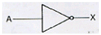
- OR 게이트
- 버퍼(buffer)
- NAND 게이트
- 인버터(Inverter)
(정답률: 75%)
3. 드모르간(De Morgan)의 정리에 의해
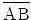
를 바르게 변환시킨 것은?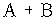
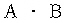
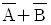
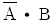
(정답률: 75%)
4. 논리적 연산의 종류에 해당되지 않는 것은?
- AND
- OR
- Rotate
- ADD
(정답률: 69%)
5. 다음 블록화 레코드에서 블록화 인수는?
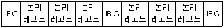
- 1
- 2
- 3
- 4
(정답률: 86%)
6. 로더(loader)의 기능이 아닌 것은?
- 할당(allocation)
- 링킹(linking)
- 재배치(relocation)
- 스케줄링(scheduling)
(정답률: 69%)
7. 2진수 1100101을 8진수로 변환하면?
- 101(8)
- 1⑤(8)
- 142(8)
- 145(8)
(정답률: 66%)
8. 명령어의 주소(address) 부를 연산 주소(address)로 이용하는 주소지정방식은?
- 상대 address 방식
- 절대 address 방식
- 간접 address 방식
- 직접 address 방식
(정답률: 53%)
9. 명령어 형식(instruction format)에서 첫 번째 바이트에 기억되는 것은?
- operand
- length
- question mark
- op code
(정답률: 82%)
10. 원격지에 설치된 입/출력 장치를 무엇이라고 하는가?
- 변복조장치
- 스캐너
- 단말장치
- X-Y 플로터
(정답률: 62%)
11. 입/출력장치와 중앙처리장치의 속도 차이로 인한 단점을 해결하는 장치는?
- 채널장치
- 제어장치
- 터미널장치
- 콘솔장치
(정답률: 79%)
12. 기억장치 고유의 번지로서 1, 2, 3 …과 같이 16진수로 약속하여 순서대로 결정해 놓은 번지. 즉, 기억장치 중 기억장소를 직접 숫자로 지정하는 주소로서 기계어 정보가 기억되어 있는 곳을 무엇이라고 하는가?
- 상대주소
- 절대주소
- 완전주소
- 약식주소
(정답률: 82%)
13. 다음과 같은 논리식으로 구성되는 회로는?
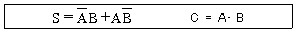
- 반가산기(Half Adder)
- 전가산기(Full Adder)
- 부호기(Encoder)
- 전감산기(Full Subtracter)
(정답률: 78%)
14. 다음 중 실행될 명령어를 가지고 있는 것?
- 명령 Register
- Index Register
- 누산기(Accumulator)
- Memory Register
(정답률: 74%)
15. 누산기(Accumulator)에 대한 설명으로 옳은 것은?
- 산술연산 또는 논리연산의 결과를 일시적으로 기억하는 장치이다.
- 연산명령의 순서를 기억하는 장치이다.
- 연산부호를 해독하는 해독장치이다.
- 연산명령이 주어지면 연산준비를 하는 장치이다.
(정답률: 77%)
16. 그림과 같은 논리회로의 출력 C는 얼마인가?(단, A=1, B=1 이다)
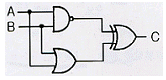
- 0
- 1
- 10
- 11
(정답률: 70%)
17. 2진수 1011을 그레이코드(gray code)로 변환한 것은?
- 0111
- 1110
- 0100
- 1010
(정답률: 66%)
18. 주소지정 방식 중 기억장치에 접근할 피연산자가 없는 것으로 산술에 필요한 명령어는 스택 구조 형태에서 처리하도록 하는 것은?
- 0-주소 형식
- 1-주소 형식
- 2-주소 형식
- 3-주소 형식
(정답률: 79%)
19. 연산에 사용되는 데이터 및 연산의 중간 결과를 레지스터에 저장하는 주된 이유는?
- 비용 절약을 위하여
- 연산 속도의 향상을 위하여
- 기억 장소의 절약을 위하여
- 연산의 정확도를 높이기 위하여
(정답률: 71%)
20. 하나의 레지스터에 기억된 자료를 모두 다른 레지스터로 옮길 때 사용하는 논리연산은?
- rotate
- shift
- move
- complement
(정답률: 69%)
2과목: 패키지 활용
21. SQL의 데이터 조작문(DML)에 해당하지 않는 것은?
- UPDATE
- DROP
- INSERT
- SELECT
(정답률: 67%)
22. 다음 내용을 실행하는 SQL 문장으로 옳은 것은?
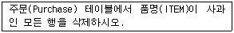
- DELETE FROM Purchase WHEN ITEM = “사과”
- DELETE FROM Purchase WHERE ITEM = “사과”
- KILL FROM Purchase WHERE ITEM = “사과”
- DELETE ITEM = “사과” FROM Purchase
(정답률: 77%)
23. 관계 데이터 모델에서 하나의 애트리뷰트가 취할 수 있는 같은 타입의 원자 값들의 집합을 무엇이라고 하는가?
- 도메인
- 속성
- 스키마
- 튜플
(정답률: 72%)
24. 프리젠테이션에서 화면 전체를 전환하는 단위는?
- 슬라이드(slide)
- 시나리오(scenario)
- 개체(object)
- 리스트(list)
(정답률: 83%)
25. 스프레드시트를 활용하여 처리할 수 있는 업무로 적합하지 않은 것은?
- 성적관리
- 신제품 소개
- 가계예산관리
- 퇴직금 투자분석
(정답률: 82%)
26. 제품명과 단가로 이루어진 제품 테이블에서 단가에 대한 내림차순으로 검색하고자 한다. ( ) 안에 알맞은 SQL명령으로 옳게 나열된 것은?
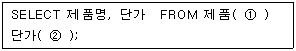
- ① ORDER TO ② DESC
- ① ORDER BY ② DESC
- ① ORDER ② DOWN
- ① ORDER ② DESC
(정답률: 82%)
27. 데이터베이스 설계 단계를 순서대로 기술한 것은?
- 개념적 설계 → 물리적 설계 → 논리적 설계
- 개념적 설계 → 논리적 설계 → 물리적 설계
- 논리적 설계 → 개념적 설계 → 물리적 설계
- 논리적 설계 → 물리적 설계 → 개념적 설계
(정답률: 83%)
28. 다음은 SQL의 갱신문이다 ( ) 안의 내용으로 적당한 것은?
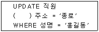
- SET
- IN
- FROM
- INTO
(정답률: 59%)
29. 스프레드시트에서 입력의 기본 단위를 무엇이라고 하는가?
- 함수
- 셀
- 테이블
- 슬라이드
(정답률: 84%)
30. 스프레드시트의 기능 중 조건에 맞는 내용만 선별하여 추출하는 기능에 해당하는 것은?
- 차트
- 정렬
- 필터
- 매크로
(정답률: 81%)
3과목: PC 운영 체제
31. 도스(MS-DOS)에서 Ctrl+Alt+Del 키를 눌러 재부팅하였다. 이러한 재부팅 방법을 무엇이라고 하는가?
- 콜드부팅(Cold Booting)
- 웜부팅(Warm Booting)
- 하드부팅(Hard Booting)
- 핫부팅(Hot Booting)
(정답률: 71%)
32. “윈도98”에서 파일의 삭제시 휴지통에 넣지 않고 바로 삭제하는 단축키는?
- Ctrl + Alt
- Shift + F1
- Ctrl + Del
- Shift + Del
(정답률: 75%)
33. “윈도98”을 종료시키는 방법으로 옳지 않은 것은?
- 시작버튼에서 시스템 종료를 누르고 시스템 종료를 선택한다.
- 바탕화면에서 Alt + F4 키를 누르고 시스템 종료를 선택한다.
- Ctrl + Alt + Del 키를 누르고 시스템 종료를 선택한다.
- Ctrl + Alt + Shift 키를 누르고 시스템 종료를 선택한다.
(정답률: 71%)
34. 도스(MS-Dos)에서 디스크의 상태를 점검하는 명령은?
- CHKDSK
- FORMAT
- PROMPT
- DELTREE
(정답률: 76%)
35. UNIX에서 현재 작업 디렉토리 경로를 화면에 출력하는 명령어는?
- pwd
- cat
- tar
- vi
(정답률: 60%)
36. 프로세스 스케줄링 방법 중 가장 먼저 CPU를 요청한 프로세스에게 가장 먼저 CPU를 할당하여 실행할 수 있게 하는 방법은?
- FIFO
- LRU
- LFU
- FILO
(정답률: 67%)
37. 다음은 무엇에 대한 설명인가?
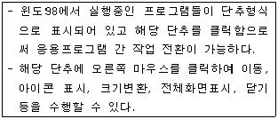
- 작업표시줄
- 바탕화면
- 표시기
- 입력모드 창
(정답률: 74%)
38. UNIX에서 현재 실행중인 프로세스를 종료하기 위한 명령어는?
- ls
- del
- kill
- stop
(정답률: 62%)
39. “윈도98”에서 도스를 실행시켰더니 전체화면 형태로 도구들이 보이지 않아 불편하였다. 도스의 창 형태로 전환하려면 어떤 키를 눌러야 하는가?
- Ctrl + Space
- Ctrl + Enter
- Alt + Space
- Alt + Enter
(정답률: 62%)
40. UNIX에서 주기억장치에 상주하며 프로세스 관리, 메모리 관리, 파일 관리를 하는 것은?
- 쉘(shell)
- 커널(kernel)
- 유틸리티(utility)
- 블록(block)
(정답률: 59%)
41. UNIX에서 프롬포트가 %라면 사용자가 사용하고 있는 쉘의 종류는?
- C shell
- korn shell
- borune shell
- com shell
(정답률: 66%)
42. 도스(MS-DOS)에서 특정 파일의 감추기 속성, 읽기 속성을 지정할 수 있는 명령은?
- MORE
- FDISK
- ATTRIB
- DEFRAT
(정답률: 62%)
43. “윈도98”에서 작업표시줄에 볼륨 조절 표시 아이콘을 생성할 수 있는 제어판의 아이콘은?
- 사운드
- 멀티미디어
- 내게 필요한 옵션
- 시스템
(정답률: 62%)
44. “윈도98”에서 클립보드에 현재 화면에서 활성윈도를 복사하는 기능키는?
- Ctrl + Print Screen
- Alt + F
- Alt + Print Screen
- Ctrl + V
(정답률: 50%)
45. “윈도98”의 찾기 메뉴에서 지정할 수 있는 형식이 아닌 것은?
- 파일 속성
- 파일의 크기
- 포함하는 문자열
- 파일 형식
(정답률: 46%)
46. “윈도98”의 특징으로 거리가 먼 것은?
- 16비트 환경의 운영체제이다.
- GUI(Graphic User Interface)로 사용이 편리해 졌다.
- PNP(Plug & Play) 기능을 가지고 있다.
- 멀티태스킹(Multitasking) 환경을 지원한다.
(정답률: 74%)
47. 다음 괄호 안에 가장 알맞은 단어는?
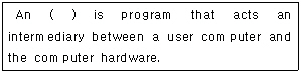
- Operating system
- GUI
- Interpreter
- File System
(정답률: 70%)
48. 도스(MS-DOS)에서 사용할 수 있는 드라이브의 최대수를 지칭하는 명령어는?
- LASTDRIVE
- BLOCKS
- FILES
- PRIMARYDISK
(정답률: 59%)
49. “윈도98”에서 이미 사용되었던 3.5인치 플로피디스크를 신속히 포맷할 경우 사용하는 옵션은?
- 빠른 포맷
- 전체
- 시스템 파일만 복사
- 이름표 없음
(정답률: 75%)
50. Which is not operating system?
- UNIX
- DOS
- WINDOWS98
- PASCAL
(정답률: 63%)
4과목: 정보 통신 일반
51. 다음 중 데이터 통신 용량에 영향을 미치지 않는 것은?
- 감쇠
- 신호세력
- 대역폭
- 잡음세력
(정답률: 37%)
52. 이동전화 시스템에서 CDMA 방식의 의미는?
- 채널분할 다중화 방식
- 코드분할 다중화 방식
- 캐리어 변복조방식
- 콤팩트디스크 다중접속방식
(정답률: 57%)
53. 단말기와 변복조기 사이는 25핀 플러그로 연결되어 있으며 이 연결의 표준화를 기하기 위하여 EIA와 ITU-T에서 각각 정해놓은 규격이 순서대로 옳은 것은?
- RS-232C, V.21
- V.22, RS-232C
- V.25, RS232C
- RS-232C, V.24
(정답률: 41%)
54. 다음 중 정지화상의 부호화 표준에 해당되는 것은?
- IEEE 802
- TCP/IP
- MPEG
- JPEG
(정답률: 47%)
55. 정보통신시스템에서 통신신호 세력의 전력 측정치가 10mW 이었을 때 이를 dBm으로 표시하면?
- 10
- 20
- 30
- 40
(정답률: 43%)
56. 다음 중 정보통신 교환망에 해당되지 않는 것은?
- 회선교환망
- 패킷교환망
- 메시지교환망
- 비트교환망
(정답률: 54%)
57. 반송파의 진폭과 위상을 상호 변환하여 신호를 싣는 변조 방식은?
- AM
- FM
- PM
- QAM
(정답률: 34%)
58. 다음 중 광섬유 케이블의 손실에 해당하지 않는 것은?
- 접속손실
- 산란손실
- 흡수손실
- 유전체손실
(정답률: 45%)
59. 다음 중 마이크로파(microwave) 통신 방식과 관계없는 것은?
- 전자파를 이용한 무선통신 방식이다.
- 광을 이용하므로 전송 속도가 빠르다.
- 이동통신 수단으로도 이용되고 있다.
- 중계거리를 고려하여야 한다.
(정답률: 44%)
60. 다음 중 광통신에서 발광기로 주로 사용되는 것은?
- 애벌런시 포토다이오드(APD)
- 핀 포토다이오드(PIN PD)
- 제너 다이오드(ZD)
- 레이저 다이오드(LD)
(정답률: 60%)